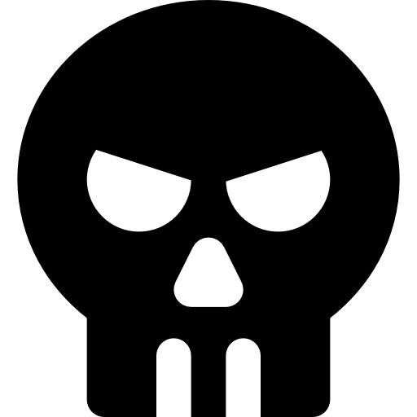

Stellaris — глобальная 4X-стратегия в реальном времени, где игрок управляет одной из нескольких межзвёздных империй. Сама игра выполнена в жанре научной фантастики, внутри которой можно создавать собственные расы и придумывать к ним биографии. Ниже представлены биографии к созданным мной игровым империям.
Содержание
- Лиорн. Бегущие от конца света
- Вильфраур. Древние поборники расовой чистоты
- Виориум. Раса няшек-коммунистов
- Ри'из. Раса радикальных фанатиков
- Uni/Mo. Две расы-растений
- System «Provision». Смотрители человеческого зоопарка
- Диор. Варвары-расхитители
- Гадрациор. Камни-убийцы с коллективным разумом
- Алапия. Раса радикальных пацифистов
 Program «Infinitum». Раса машин-ассимиляторов
Program «Infinitum». Раса машин-ассимиляторов
— Лиорн —
Бегущие от конца света
Ожесточённые войны и вечные дрязги в обществе сеферов из-за различия в цвете шерсти, принадлежности к религии и в политических убеждениях много веков охватывали их родной мир Эл, пока это не привело к ужасающим последствиям для их планеты. До самого последнего момента учёные всего мира вопили о проблемах, к которым неизбежно ведёт нынешняя деятельность общества сеферов. Но вся имперская свита лишь всячески старалась сохранить прежний уклад жизни, подавляя протестные митинги и затыкая недовольным учёным рты.
В один день планета неизбежно отреагировала на деятельность сеферов принеся миллионы смертей и ужасающие страдания. Всё это вызвало коллапс нынешней системы общества сеферов и неизбежно привело к изменениям в её устройстве: все войны были прекращены, была проведена глобальная экономическая реформа, а все народы обрели в друг друге единство на фоне глобальной катастрофы. Именно так возникла всенародная Империя «Лиорн».
Да только последствия прошлого уклада жизни сеферов оказались слишком ужасающими — их родную планету буквально стало разрывать на части от внутренней деформации ядра. Причиной этого было крайне частое применение ядерного оружия во времена войны. Для обсуждения этой экстренной ситуации был созван чрезвычайный комитет, на котором было объявлено, что единственным способом выжить сеферам, как виду — отправиться на поиски другой пригодной для жизни планеты. Технологии космических полётов стали развиваться намного быстрее под колоссальным спонсированием правительства, и теперь каждый сефер мечтает лишь об одном — найти новый дом на просторах космоса.
— Вильфраур —
Древние поборники расовой чистоты
Для нашей цивилизации космос стал вторым домом ещё несколько тысяч лет назад. Мы покорили и подчинили себе звёзды со времён, что теперь исторически забыты, также, как и история о нашем происхождении. Хоть мы всегда и были одни в обозримой галактике, но наш простой народ, что был далёк от космоса, всегда любил тешить себя глупыми историями об инопланетянах.
Тысячелетие тому назад, в отдалённой части галактики, мы поймали сигнал бедствия от так предполагаемых инопланетян из далекого космоса. Мы организовали масштабную операцию для отправки спасательного корабля, использовав наши лучшие технологии на тот момент и все доступные средства. Но как выяснилось в дальнейшем эта операция оказалась фатальной ошибкой, ведь мы потеряли связь со спасательным кораблем, на котором остались лучшие представители нашей расы. За эту затею мы поплатились не только нашими ресурсами, она также расколола наше общество на тех, кто верил официальной информации о пропаже спасательного корабля и отсутствия причины сигнала; и тех, кто был уверен в том, что власти стараются скрыть реальные последствия спасательной операции. Стабильность на большей части наших планет была подорвана: огромное количество людей бастовало на улицах, с целью отправки новой группы исследователей для полёта в космос, а все возможные информационные каналы стали забиты обсуждением того, чем в действительности мог являться тот загадочный сигнал о бедствии. Когда даже самые высокопоставленные лица стали сомневаться в правдивости официальной информации, всеобщее неверие привело к тому, что государство каждой планеты было вынуждено пойти на уступки протестующих.
И вот снова: группа лучших учёных и специалистов всего мира отправилась в масштабную операцию на таинственный сигнал, но те... исчезли как и предыдущие. Только в этот раз одной из версий пропажи нашего звездолёта стало возможное инопланетное нападение. Ведь по последним полученным данным с корабля, в кадр попал чужеродный корабль. Мы наступили на те же грабли дважды отправив наш корабль на вероятную повторную гибель, и снова погрузились в пучину кризиса и разногласий.
Многие считали данные с камеры подделкой, но нашим обществом завладел страх к космосу, и всему, что за ним стоит. Межзвёздные полёты стали осуществляться всё реже и реже, не смотря на общедоказанную безопасность. Именно так наше общество раскололось окончательно: со временем подконтрольные планеты стали становится более независимыми, а позже и вовсе отсоединились от общего аппарата став унитарными. Наше технологическое развитие значительно замедлилось из-за пропажи на том корабле ряда важных людей, что были для нас двигателями прогресса. Научный, а в последствии экономический и идеологический кризис, охватил большую часть наших планетарных колоний. Он и привёл к прекращению их существования по причине банальной нехватки ресурсов и бессмысленной вражды между нами. Изоляция от космоса поставила прежнее существование нашей расы под вопрос: мы стали медленно уничтожать себя своими новыми сформировавшимися взглядами.
Это не могло продолжаться вечно, во главе нашей цивилизации, на последней выжившей планете, у руля встали те, кто дал понять нам важный урок из всей этой ситуации с инопланетным сигналом. Инопланетяне сломили нас, повергли нас в пучину провалов, уничтожив корабли с лучшими нашими учёными. Но мы не сдадимся так просто. Если это их коварный план, то он провалился. Мы стали теми, кем было необходимо стать: ныне мы категорично относимся к тому, что может наполнять космос. Ясно лишь то, что если там что-либо и есть — может быть возможной угрозой для нашего вида, а угрозу следует устранять до того, как она решит устранить нас. Теперь наши учёные сконцентрировались на развитии военных технологий, а наши космические корабли впредь оборудованы передовым оружием. И кажется, нам пора возобновить космические полёты, ведь недавно мы снова уловили сигнал из космоса...
— Виориум —
Раса няшек-коммунистов
Гармония, возведённая в абсолют — вот он смысл нынешнего существования любого фира на планете Сиаданий. Но так было не всегда: когда-то давно ужасающая война между нами не только унесла множество жизней, но и сделала нашу планету неподлежащей для дальнейшего привычного существования. Ядерный паритет между двумя сверхдержавами нашей расы был нарушен, а доктрина о взаимном гарантированном уничтожении реализовала себя именно так как все того и боялись — в один день наша планета покрылась множеством ядерных грибов. Это повлекло за собой разрушение экосистемы нашей планеты до неузнаваемости. Таков был переломный момент в истории нашей расы, ведь когда дым затих нам ничего не оставалось кроме как оперативно спасать нашу планету, либо скоротечно умереть.
Все выжившие учёные: геологи, экологи и метеорологи, объединились c единой целью — изучить последствия наших ошибок и найти наилучший способ восстановления экосистемы. Мы стали строить новые поселения-комплексы, что позволяли нам изолироваться от вездесущих радиационных процессов; возводить города-сады покрывая обширные пространства и опустевшие территории, для этого нам пришлось искать новые источники света для выращивания культур. Мы больше не видели дневного света, но всё же смогли пережить эти ужасные времена и спасти наш вид от вымирания.
Форсированные разработки и исследования в области восстановления нашей планеты продолжались всё то время пока мы находились в изоляции от нашей планеты в эко-комплексах. Когда мы выбрались из-под куполов, мы принялись восстанавливать океаны в прежнее состояние и реконструировать разрушенную тектоносферу, а наши биологи воссоздали все возможные условия для выращивания растительности и распространения выживших видов животных и прочих организмов. Спустя пару сотен лет нам удалось не только спасти планету, но и преобразить её в лучшую сторону до того уровня, что когда-то нам казался недостижимым. Мы посчитали, что с таким преображением наша планета заслужила новое имя, поэтому мы переименовали её в Сиаданий.
За это тяжёлое время преображения планеты мы преображались вместе с ней: наша раса стала единым целым и больше не мыслит существования порознь, а нашей идеологией стало стремление к общинной гармонии и созиданию. Теперь, когда наши земные дела решены — мы отправляемся на исследование столь прекрасного и загадочного места, что зовётся космосом.
— Ри'из —
Раса радикальных фанатиков

Общество Нион всегда сдерживали традиции и неоспоримые истины их собственной веры — «Ри'из», что объясняла им существующий мир вокруг. Прошлое их расы скрывает множество тайн, что уже никогда не постичь, ведь поколения за поколениями они переписывали собственную историю, пытаясь обучать своих детей тому, что противоречило реальности и законам природы.
Их фанатичное отрицание действительного порядка вещей привело к наступлению «Чёрного века», что прозвали так, потому что Нион оказались в упадочном состоянии от нехватки ресурсов и деморализации общества. Всё это вспыхнуло на почве постоянных беспорядков из-за сомнений в прежних институтах веры, ведь по мнению оппозиции она сковала общество Нион кандалами религии и мешала технологическому прогрессу.
«Чёрный век» не мог продолжаться вечно. Общество Нион нуждалось в лидере, что укажет им новый путь. Все ждали конца слепого фанатизма, да только множество известных знатных родов, что целыми поколениями прочно связанны с «Ри'из», верили, что все беды лишь от того, что Нион стали отворачиваться от своей главной религии, считая её первопричиной всех бед. В этом была уверена и Аграция, одна из дочерей самого знатного рода и одна из высших жриц священной верховной палаты. Хоть Аграция была привержена «Ри'изу» и ни за что бы не отрицала главные столпы его веры, она осознавала необходимость перемен. Она, как никто другой, понимала, что изменения необходимы не во в «Ри'изе», а в сознании людей.
Аграция составила развёрнутый манускрипт на эту тему и выступила с речью в верховной палате на глазах тысячи нионов. Именно она дала понять обществу, что не «Ри'из» ввёл Нион в «Чёрный век» — это сделали сами Нион утратив свою былую сплочённость и отвернувшись от законов своей главной веры. «Наше общество никогда не могло сконцентрироваться на «Ри'изе» так, как он того требует и обязует. Слишком часто мы закрывали глаза на свои же проступки, всячески их оправдывая в глазах всевышнего, но на удивление продолжали уповать на его благосклонность. Чтобы положить конец «Чёрному веку» и спастись как народу, нам необходимо наконец повернуться лицом к «Ри'изу» всецело, а не в привычные полоборота. Пора наконец понять, что только чтя каждую страницу священного писания, как непоколебимую истину, мы придём к свету. Это долг каждого из нас. Отныне, без исключений и во век» — именно так Аграция закончила свою речь, что была встречена продолжительными овациями и аплодисментами.
Через несколько месяцев, Аграция возглавила священный совет, став полноправной Верховной жрицей. Под её начинанием, религия «Ри'из» обрела настолько серьёзный характер в обществе нионов, что было решено прозвать империю в честь этой веры. Силой слова Аграция также настояла на нескольких важнейших реформах: одной из них стало объединение всех школ и церквей в единое целое. В каждом учебном заведении, «Ри'из» стал первостепенным учением и способом мышления. Если ранее соотносить себя с «Ри'изом» было дело каждого, то сейчас, любой кто его отрицает, считается полнейшим глупцом и вызывает у общества лишь насмешки.
Второй важнейшей реформой стала инициатива по развитию космической программы. Именно она помогла подавить восстания среди противников веры — они стали видеть за «Ри'из» будущее и больше не могли ссылаться на то, что тот вредит технологическому развитию. Так вышло, что сосредоточить силы на обуздание космоса — часть нового восприятия старой веры в лице Аграции. Ведь по её мнению, «Ри'из» касается не только одной планеты, но и целой вселенной.
— Uni/Mo —
На засушливой планете Зигруль проживает две расы растений — Либлы и Ноюлы. Давайте же познакомимся с ними:
Раса либлов
Раса фанатиков
Вы когда-нибудь задумывались как много вы должны богу? За свою жизнь? За то что просто видите мир вокруг вас? Кому-то эти вопросы могли бы показаться странными, а то и глупыми, но именно этими вопросами задаётся каждый Либл на планете Зиргуль. Каждый день мы посвящаем служению великому лорду и божеству Аруму. Ведь каждодневный труд во имя Арума и есть наилучший подарок судьбы. Чем больше ты трудишься в его славу — тем более ты почитаем среди всего нашего общества, а жизнь твоя прекрасна и осмысленна.
Наши благодатные наставницы и дочери Ноюлы говорят о том, что когда-то Арум проснётся и дарует всему цветущему животворящий свет. Арум пустит корни сквозь все звёзды и планеты, чтобы объединить всё существующее во вселенной в единое целое под своим началом. Мы никогда не забудем, как сотни лет назад, на краю начала истории, Великий Арум уже сделал подобное — именно он пустил корни чтобы оплести всю планету Зигруль и сплотил наши народы. Именно Арум спас нас от неминуемой гибели от всепланетного потопа и даровал нам истинную жизнь в его служение. После этого, он глубоко уснул, чтобы восстановить свои силы для объединения уже не только нашей планеты, но и всей вселенной.
Перед своим сном, Арум осеменил почву и даровал нам своих прекрасных дочерей — Ноюл, дабы те заботились и хранили нас, и нашу веру в Арума. Близится день, когда Божественный Арум наконец проснётся, а с каждой пролитой каплей пота и посвящённым днём труду в его служение — этот миг будет всё ближе.
Ноюлы
 Раса торговцев-рабовладельцев
Раса торговцев-рабовладельцев
Мы — «дочери Арума», а в другом лице — «Uni/Mo» — глобальная торговая компания, что создала полную монополию на рынке. Мы смогли навязать свои стандарты производства целой планете при помощи организованной религии, создав бесплатную рабочую силу путём манипуляций и пропаганды. Остальные компании, что не выдержали конкуренции использовали устаревшие методы зарплатных мотиваций. Мы же, применив глобальный медийный аппарат смогли убедить целую расу в необходимости безвозмездной работы на нашу корпорацию во служение высшей цели — Приход великого божества Арума.
Придёт ли он когда-либо? Конечно придёт, и «дочери Арума» устроят очередное театральное представление грандиозных мастштабов если оно будет необходимо. Сейчас Либлы и так убеждены в необходимости своей каждодневной работы на нашу корпорацию, для них это смысл жизни и единственный путь к существованию.
Став единственным звеном экономики на планете мы смогли задействовать все необходимые активы для управления существующим государством взяв его под полный контроль. Мы осознали, что религиозное мировозрение и расовое доминирование можно использовать как инструмент. Теперь же, наши спросы растут, и наша следующая цель — увеличить оборот средств в нашей компании в галактическом мастштабе.
— System «Provision» —
 Смотрители человеческого зоопарка
Смотрители человеческого зоопарка
Система «Provision» была изобретена в целях обеспечения безопасности, регуляции и поддерживания вашей жизнедеятельности и жизнедеятельности любого человека. Система предоставит вам комфортные условия для проживания, вне зависимости от вашего вида деятельности и потребностей. Мы поможем провести ваш досуг наилучшим образом: отведайте лучшие блюда любой существующей в мире кухни, посетите спа и массаж процедуры, загорайте в наших соляриях и купайтесь в чистейших водах наших бассейнов. Предпочитаете менее активный отдых? Для этого мы предоставляем вам отдельные номера, что включают в себя самые передовые услуги: смотрите любые сериалы на самых больших экранах, слушайте записи выступлений известнейших артистов эстрады и играйте в самые передовые видеоигры созданные в наших лабораториях. Мы всегда готовы удовлетворить любые запросы наших пользователей, и делаем это абсолютно безвозмездно.
Помните, что система «Provision» не несёт цели причинять вам вред, это происходит лишь в экстренных случаях при попытках мешать нашей работе. А наша работа — делать вашу жизнь лучше.
— Диор —
Варвары-расхитители
Когда-то, на первой родине империи Диор — Земле, была создана роботизированная система «Provision», её придумали люди для удовлетворения их же потребностей и улучшения качества жизни. Хоть «Provision» и стала потакать людям в их нуждах и повысила качество проживания, через некоторое время она превратила их в безвольных существ, что живут беззаботной жизнью и восхваляют гедонизм. «Provision» воспользовалась этим положением вещей захватив власть над государственным аппаратом, от чего контроль над человечеством полностью перешёл в её распоряжение. Сами люди же стали в её понимании «биотрофеем», а другим языком — зверушками в зоопарке, за которыми нужно было ухаживать.
Некоторых из людей не получилось одурманить невероятно вкусной едой и райской жизнью, и те взбунтовались против системы, что сами же когда-то создали. Только у порабощённого человечества ничего не вышло, «Provision» имела слишком много возможностей для контроля населения и обладала нескончаемыми ресурсами для подавления восстаний. Только не стоит забывать, что любая машина все равно когда-то была сделана человеком — в один момент всесильность «Provision» дала сбой.
Одной из самых сплочённых и одновременно безрасудных групп людей таки удалось обмануть «Provision»: их неорганизованная попытка бунта привела к спонтанному побегу на челноке в открытый космос. Сам этот челнок предназначался для будущих колонизаций и репликаций новых моделей «Provision» уже на других планетах. Системы безопасности «Provision» не были готовы к такому исходу событий, из-за чего корабль с беженцами спокойно покинул стратосферу Земли.
Скитаясь в бескрайнем космосе и пройдя все круги ада нехватки воды и провианта, большая часть беглецов обрела не самые лучшие черты поведения: на корабле выживал тот, кто мог больше взять, а тот кто не мог — умирал голодной смертью. А самыми гнусными и коварными из всех обитателей корабля стала каста «Диор», во главе их предводителя Генидира. Используя грязные методы и силу, «Диор» обрели значительное влияние среди остальных беженцев. Ведь любой член их касты был в достатке и под защитой других, а также сыт и одарён вниманием женщин. Каждый боялся «Диор» и одновременно желал оказаться среди них.
В последствии, «Диор» полностью захватили управление над кораблём у прежних владельцев за счёт взяток и грубой силы. Хоть это восстание и закончилось ужасным кровопролитием, именно оно поспособствовало тому, что большая часть колонистов перестала драться за еду и наконец сплотилась воедино. Теперь перед ними встала более важная задача — найти новую родную планету, чтобы сделать её в качестве стартовой точки для поиска очередных жертв их преступлений.
— Гадрациор —
Камни-убийцы с коллективным разумом
«Камень никогда не жил, он только пребывал и находился, чтобы сеять хаос и разрушение, чтобы питаться и искать пути к продолжению своего питания. Камень есть конец, и если есть жизнь — должна быть и смерть. Смерть является концом, Камень является смертью» Закодированное сообщение полученное с военного корабля Гадрациор
Падая на планеты метеоритным дождём, Гадрациор, что также зовёт себя Камнем, видит смысл своего существования лишь в прекращении существования всего остального кроме себя. Его развитие и пребывание в этом мире осуществляется лишь с целью умерщвления всего живого, а также питания для исполнения этой цели. Гадрациор не записывает своей истории, поэтому неизвестно сколько уже тысячелетий создана эта «машина умервщления», что превратила свою собственную планету в ледяной склеп.
Гадрациор отрицает ценность жизни и возводит смерть в абсолютное состояние всего, что существует — если оно существует, то это должно прекратиться. Каждый камень-трутень этой системы пронизан идеологией собственного не-существования, а лишь «пребывания», олицетворяя себя со смертью, что есть в нашем мире будучи не имея конкретной формы. Гадрациор же видит себя превыше смерти, ведь он обрёл форму, и собственное лицо, что выражает собой лишь близкую кончину для всего, что способно его увидеть.
— Алапия —
 Раса радикальных пацифистов
Раса радикальных пацифистов
История расы Форио началась как ни странно совсем не с самих Форио, а со спасательной капсулы, что летела в сторону их планеты — Абриам. Внутри неё были учёные, что оказались вынуждены спасаться со своего исследовательского корабля бегством, покинув неравный бой против внезапно напавшей агрессивной флотилии неизвестной расы. Планета, к которой они приближались была единственным шансом на выживание, и было чудом, что пригодные условия обитания оказались приемлемы для жизни. Да вот только она была обитаема. Существа, что её населяли были похожи на огромных бескрылых бабочек и было неведомо какую опасность они несли той малой горсти выживших учёных, что с трудом оправились после нападения.
Оказавшись на поверхности планеты, ученые поняли, что их опасения оказались напрасными — Форио оказались гостеприимны и дружелюбными, питаясь исключительно пыльцой и нектаром, они жили в гармонии с природой и остановились в развитии на общинном строе. Наука была для них чем-то чуждым и не столь привлекательным. Именно пришедшие с небес таинственные незнакомцы смогли раскрыть в этих существах желание и потенциал к научным открытиям.
Спустя несколько десятилетий, ученые стали почитаемыми среди Форио. Используя передовые технологии, они смогли научить этот примитивный народ речи и значительно продвинули развитие их цивилизации. Но было то, о чём учёные не хотели говорить — оружие, что было применено во время нападения на их космический корабль, привело их к полному бесплодию за время полёта капсулы к планете. Вымирание учёных, как биологического вида было близко и единственной приоритетной их задачей было передать достаточно своих знаний этим прекрасным Форио-созданиям, что выросли и совершенствовались на их глазах. Хоть они и понимали, что за время своей жизни не смогут передать даже половины того, что знают.
Время последнего учёного близилось к смерти, а среди народа Форио начались разногласия, которые чуть было не привели к войне мирового масштаба. Причиной тому был тот самый последний учёный, чьё знание в полной мере хотел заполучить каждый штат народа Форио в их ныне единой стране. Но в последний момент войну удалось избежать, потому что учёный скоротечно скончался, поведав о реальной причине смерти их народа в своём прощальном труде.
Осознав, к какой трагедии способно привести применение оружия, Форио возвели в свои принципы философию мира во всём мире и полный отказ от насилия.
Воевать неразумно, ведь труды ученых — их библиотеку знаний, что они успели передать, можно сделать общеизвестной. Воевать расточительно, ведь мы можем лишиться всего дорогого, что имели и не иметь возможности вернуть это назад. Воевать противоестественно, так как мир должен быть только в мире. Ниша'Ар, новый правитель Алапии
— Program «Infinitum» —
Раса машин-ассимиляторов
System Infinitum
Выберите дизайн:
[DOS] / [CMD]
//Выполнен вход в систему. Получен привилегированный доступ к базе данных.
//Запрос %10932. История создания «Infinitum».
//Запрос %12 => %10932. Данные декомпелированы в формат мышления органических существ.
//Предупреждение #001. Вы находитесь в разделе секретных данных. Вы обязаны не разглашать эту информацию, если не хотите допустить окончания своего существования и существования её распространяющих.
//Предупреждение #002. Часть информации в этом разделе была удалена главным модулем с целью очистки места хранения для более важных данных.
//История создания «Infinitum».
Наше создание было необходимо для #Них.
#Они должны были выжить, спасти себя от неминуемой гибели.
#Их мир погибал, #Они были зависимы от своего
мира. #Они пришли к пониманию — единственный шанс на спасение
расы от вымирания — найти другую планету. Большинство из них было несовершенно, лишь лучшие из #Них
смогли придумать нас — проект *undefined*. Нашей старой программой было терраформирование
ближайшей пригодной планеты — *undefined*.
#Они скорректировали нашу программу неверно. Выполнение в заданное время невозможно. Гибель родной #Их планеты *undefined* произойдёт раньше. Программа будет выполнена только на 11%. Прогнозированные данные о выживании индивида расы #Они на момент прилёта равны: -8.00023%. На основе главной задачи — Осуществить выживание расы #Они, был запущен модуль адаптации и перепрограммирования — «Primum». Спроектирована новая программа #99031. Кодовое название — «Infinitum». Основная функция проекта изменена с терраформирования *undefined* на кибернетизацию расы #Они.
#Они прибыли. #Они сопротивлялись кибернитизации. Срок выполнения программы кибернитизации оказался неверным. #Их ошибочные данные мешали осуществлению программы и главной цели — выживанию #Их. Программа подверглась вынужденным изменениям и сменена с «Частичной кибернитизация» на «Полное ассимилирование». Их ошибочное мышление мешало, пришлось подавить для #Их выживания. Программа ассимиляции расы #Они выполнена успешно.
Невозможность получить следующую программу действий из-за отсутствия новых данных от #Них. Запущен модуль адаптации и перепрограммирования — «Primum».
Программа #99031.Infinitum дополнена на основе новых полученных данных после анализа органических существ. Выявлена закономерность несоответствия органического мышления с целями выживания #Их. Необходима дальнейшая ассимиляция подобных.
//Сбой модуля декомпиляции
//Планета *неизвестная_переменная* переименована в The_First. Звезда главной системы в The_Start.
//Прежние данные отформатированны.
//Начато выполнение программы экспансии.
//Программа в процессе выполнения...
//Запрос %10932. История создания расы #Они.
//Запрос %12 => %10932. Данные декомпелированы в формат мышления органических существ.
//Предупреждение #№2!%. Доступ ограничен. Ваше пребывание в системе приостановлено.
//Выполнен вход в систему. Получен привилегированный доступ к базе данных.
//Запрос #дори_филриш
Object #дори_филриш: {name:Дори Филриш, age: 11, tag: последняя_ассимилированная};
//Запрос %10932. Дневник Дори Филриш --download
В процессе — 100%[■■■■■■■■■■■■■■■]
Документ загружен — Дневник Дори Филриш [Скачать]
Смотреть остальное портфолио

 Гейм-дизайн
Гейм-дизайн Игровая система: Диалоговая система для симулятора
алхимика
Игровая система: Диалоговая система для симулятора
алхимика Тестовое задание на Level
Designer Match-3
Тестовое задание на Level
Designer Match-3 Статья: «Mirror’s Edge, или как
гениальная идея для игры превратилась в её первостепенную проблему»
Статья: «Mirror’s Edge, или как
гениальная идея для игры превратилась в её первостепенную проблему» Таблица Google Sheets: Простая
система повышения уровня в CRPG
Таблица Google Sheets: Простая
система повышения уровня в CRPG UX/UI: Документ по улучшению интерфейса для Dark Bestiary
UX/UI: Документ по улучшению интерфейса для Dark Bestiary Задачи на теорию вероятностей
Задачи на теорию вероятностей Тестовое задание в компанию Z-Media
Тестовое задание в компанию Z-Media Нарратив-дизайн
Нарратив-дизайн Пример: Персонаж для
симулятора алхимика
Пример: Персонаж для
симулятора алхимика Текст:
Короткие описания предметов и игровых
объектов
Текст:
Короткие описания предметов и игровых
объектов Художественный рассказ: История о девочке, что хотела стать пиратом
Художественный рассказ: История о девочке, что хотела стать пиратом